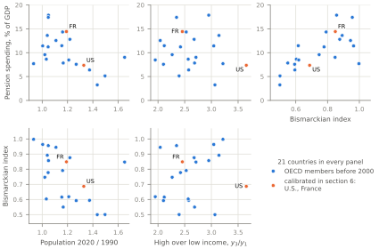
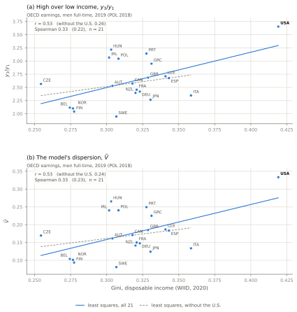
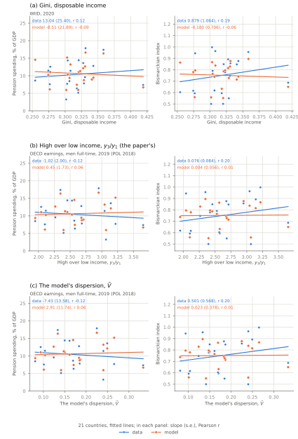

D1. The OECD cross-section
Figure 1 of the paper sets pension spending and the Bismarckian index of the OECD countries against their population growth and their income inequality. The countries are the OECD members before 2000 in which informal employment is low and one public pay-as-you-go system pays the bulk of retirement benefits. The index is \(I = 1/(2-\theta)\) of the design θ: the earnings-linked share of the least-squares line through the public pension across earnings levels, for men under the rules of 2020 (Pensions at a Glance 2021), times one minus the share of public pension spending on minimum top-ups and tested benefits. Appendix G.1 of the paper gives the rule and the measure. The cross-country test of section 7.3 runs on the same countries, Luxembourg, which has no CSES survey of the propensities to vote, at a flat profile (C4). The tabs below the figure give the values behind each marker with the year each refers to, the provider, dataset and series of every column with the date it was retrieved, and the pairwise correlations the paper’s introduction describes.
\(\cdot\)

Source
Reads:
data/oecd26_sample.csvdata/oecd26_theta.csvdata/oecd29_distribution.csvdata/oecdFigure1.csv
Built by oecdFigure1.figure (python/paper) at commit 5fcff38. Rebuild: python python/paper/build.py --no-copy --only OECDdata.
\(\cdot\)
| Country | Pension spending, % of GDP | Year | Population 2020 / 1990 | Bismarckian index | High over low income, \(y_3/y_1\) | Year |
|---|---|---|---|---|---|---|
| Austria | 14.3 | 2020 | 1.161 | 0.791 | 2.53 | 2019 |
| Belgium | 11.5 | 2020 | 1.155 | 0.616 | 2.12 | 2019 |
| Canada | 6.4 | 2020 | 1.373 | 0.595 | 2.57 | 2019 |
| Czech Republic | 8.6 | 2020 | 1.033 | 0.603 | 2.57 | 2019 |
| Finland | 12.6 | 2020 | 1.109 | 0.944 | 2.04 | 2019 |
| France | 14.4 | 2020 | 1.192 | 0.849 | 2.46 | 2019 |
| Germany | 11.2 | 2020 | 1.047 | 0.778 | 2.42 | 2019 |
| Greece | 17.9 | 2020 | 1.049 | 0.857 | 2.95 | 2019 |
| Hungary | 7.7 | 2020 | 0.932 | 0.997 | 3.22 | 2019 |
| Ireland | 3.3 | 2020 | 1.435 | 0.500 | 3.07 | 2019 |
| Italy | 17.4 | 2020 | 1.048 | 0.956 | 2.35 | 2019 |
| Japan | 9.6 | 2020 | 1.020 | 0.747 | 2.27 | 2019 |
| Luxembourg | 9.0 | 2020 | 1.651 | 0.848 | 2.71 | 2019 |
| New Zealand | 5.1 | 2020 | 1.496 | 0.501 | 2.40 | 2019 |
| Norway | 7.6 | 2020 | 1.268 | 0.593 | 2.10 | 2019 |
| Poland | 11.4 | 2020 | 1.004 | 0.964 | 3.04 | 2018 |
| Portugal | 13.6 | 2020 | 1.040 | 0.892 | 3.14 | 2019 |
| Spain | 12.8 | 2020 | 1.218 | 0.877 | 2.68 | 2019 |
| Sweden | 8.5 | 2020 | 1.210 | 0.619 | 1.95 | 2019 |
| United Kingdom | 7.8 | 2020 | 1.166 | 0.550 | 2.68 | 2019 |
| United States | 7.4 | 2020 | 1.328 | 0.687 | 3.65 | 2019 |
Note: The 21 OECD members plotted in figure D1.1; the Bismarckian index is \(1/(2-\theta)\) of the measure of the design in its note. Each variable is read in 2020 or the nearest year within 2 years of it (the year columns); population growth is the population of 2020 over that of 1990. Sources in table D1.2. In bold the economies the paper calibrates.
Source
Reads:
data/oecd26_theta.csvdata/oecd29_distribution.csvdata/oecdFigure1.csv
Built by tablesOA.oecdCountries (python/paper) at commit 5fcff38. Rebuild: python python/paper/build.py --no-copy --only OECD_Countries.
\(\cdot\)
| Columns | Source | Series and years | Note |
|---|---|---|---|
| Plotted in the figure of the paper | |||
| pensionSpending | OECD: Social Expenditure Database, OECD.ELS.SPD:DSD_SOCX_AGG@DF_SOCX_AGG(1.0); Data Explorer; retrieved 2026-09-30 | public (ES10), old age and survivors (TP01), in cash (C), % of GDP. Years: 2020 (29 of 29) | The OECD’s ’pension spending’: cash expenditure on old-age and survivors pensions (Pensions at a Glance measure PEP to its rounding). |
| pop1990_oecd, pop2020_oecd, popGrowth | OECD: Historical population data, OECD.ELS.SAE:DSD_POPULATION@DF_POP_HIST(1.0); Data Explorer; retrieved 2026-09-30 | POP, persons, both sexes, all ages, historical; popGrowth = pop2020/pop1990. Years: 1990 and 2020 (29 of 29) | France: the series adds the overseas departments from 1991, so its ratio (1.192) is not on a constant territory (World Bank 1.160). |
| yHighOverLow, yHighOverLow_year | OECD: Earnings database, Decile ratios of gross earnings, OECD.ELS.SAE:DSD_EARNINGS@DEC_I(1.0); Data Explorer; retrieved 2026-10-23 | y3/y1 of the three income groups at the U.S. population shares 0.582/0.176/0.242 (data/oecd29_distribution.csv, role data, source oecd_earnings_men_ft, convention usPct); men (SEX=M), full-time employees, D5_1 = P50/P10 and D9_5 = P90/P50; two-piece lognormal through them. Years: 2019 (20 of 21); 2018: POL | Not a column of data/oecdFigure1.csv: derived at build time from the income groups the model is fed (python/US/oecd26.py), sourced in data/oecd29_sources.csv. |
| Further concepts in data/oecdFigure1.csv | |||
| pensionSpending_cashInKind | OECD: Social Expenditure Database, OECD.ELS.SPD:DSD_SOCX_AGG@DF_SOCX_AGG(1.0); Data Explorer; retrieved 2026-09-30 | as pensionSpending, cash plus in kind (_T). Years: 2020 (29 of 29) | The in-kind part is services to the elderly (care, home help), largest in NOR 2.57, SWE 2.43, DNK 1.87, FIN 1.61. |
| pop1990_wb, pop2020_wb, popGrowth_wb | World Bank: World Development Indicators; API lastupdated 2026-07-13; retrieved 2026-09-30 | SP.POP.TOTL; popGrowth_wb = pop2020/pop1990. Years: 1990 and 2020 (29 of 29) | – |
| grr050_men, grr100_men, grr050_women, grr100_women | OECD: Pensions at a Glance 2021, table 4.1; StatLink xlsx “Version 1 - Last updated: 08-Dec-2021”; retrieved 2026-09-30 | gross pension replacement rate at 0.5 and 1.0 times average earnings, mandatory schemes, % of individual earnings, one decimal as published; women = men where the table gives none. Years: pension rules in 2020 (29 of 29) | The OECD Data Explorer dataflows DSD_PAG@DF_PRR and DSD_PAG@DF_PAG now hold only 2024 (Pensions at a Glance 2025); the publication StatLink still serves the 2020 vintage. |
| bbIndex | derived: Pensions at a Glance 2021, table 4.1 | grr100_men / grr050_men. Years: 2020 (29 of 29) | Men: the table headline and the concept of section 6. |
| bbIndex_women | derived: Pensions at a Glance 2021, table 4.1 | grr100_women / grr050_women. Years: 2020 (29 of 29) | – |
| bbIndex_mean | derived: Pensions at a Glance 2021, table 4.1 | (bbIndex + bbIndex_women) / 2. Years: 2020 (29 of 29) | – |
| gini, gini_year, gini_wiidId, gini_source | UNU-WIDER: World Income Inequality Database (WIID), version 8 September 2026, doi 10.35188/UNU-WIDER/WIID-080926; version 8 Sep 2026; retrieved 2026-09-30 | the observation WIID flags for its Companion (wiidcompanion = Yes): disposable income, persons, per capita except where gini_source says otherwise; 0-1 scale. Years: 2020 (29 of 29) | gini_wiidId is the WIID row id. |
| gini_wiidMarket, gini_wiidMarket_year | UNU-WIDER: WIID, version 8 September 2026; version 8 Sep 2026; retrieved 2026-09-30 | source OECD.Stat (Income Distribution Database), market income, square-root scale, persons; 0-1 scale. Years: 2020 (22 of 29); 2018: JPN; 2019: DNK, FRA, DEU, CHE, TUR; none in 2018-2022: ISL | Before taxes and transfers; retirees without market income count at zero. |
| gini_widPretax, gini_widPretax_year | World Inequality Lab: World Inequality Database (WID), bulk download; Last-Modified Wed, 09 Sep 2026 14:06:24 GMT; retrieved 2026-09-30 | gptincj992, p0p100: Gini of pre-tax national income, equal-split adults (20+). Years: 2020 (29 of 29) | – |
Note: The columns are those of data/oecdFigure1.csv, but for yHighOverLow, derived from the income groups of data/oecd29_distribution.csv; data/oecdFigure1_sources.csv and data/oecd29_sources.csv carry the URL of every source. The figure’s Bismarckian index, \(1/(2-\theta)\), is not among them: \(\theta\) is from data/oecd26_theta.csv (data/README.md).
Source
Reads:
data/oecd26_theta.csvdata/oecd29_distribution.csvdata/oecd29_sources.csvdata/oecdFigure1.csvdata/oecdFigure1_sources.csv
Built by tablesOA.oecdSources (python/paper) at commit 5fcff38. Rebuild: python python/paper/build.py --no-copy --only OECD_Sources.
\(\cdot\)
| Variables | \(n\) | Pearson \(r\) | \(p\) | Spearman | \(p\) |
|---|---|---|---|---|---|
| Pension spending, % of GDP and Population 2020 / 1990 | 21 | −0.52 | 0.016 | −0.45 | 0.040 |
| Pension spending, % of GDP and Bismarckian index | 21 | 0.69 | 0.001 | 0.68 | 0.001 |
| Pension spending, % of GDP and High over low income, \(y_3/y_1\) | 21 | −0.12 | 0.618 | −0.13 | 0.563 |
| Population 2020 / 1990 and Bismarckian index | 21 | −0.50 | 0.021 | −0.58 | 0.005 |
| Population 2020 / 1990 and High over low income, \(y_3/y_1\) | 21 | 0.01 | 0.981 | −0.04 | 0.845 |
| Bismarckian index and High over low income, \(y_3/y_1\) | 21 | 0.20 | 0.377 | 0.20 | 0.379 |
Source
Reads:
data/oecd26_theta.csvdata/oecd29_distribution.csvdata/oecdFigure1.csvresults/paper/oecdCorrelations.csv
Built by tablesOA.oecdCorrelations (python/paper) at commit 5fcff38. Rebuild: python python/paper/build.py --no-copy --only OECD_Correlations.
Inequality: the Gini and the model’s measures
The paper measures income inequality as the model does. Each synthetic country of sections 6 and 7 carries three income groups, at the U.S. shares of the population, with the relative earnings \(y_i\) of its men in full-time work, and the paper’s measure is high over low income, \(y_3/y_1\), the relative earnings of the top group over those of the bottom one. The model’s own summary of the same groups is the dispersion \(\tilde V = \sum_i \gamma_i (y_i - 1)^2/y_i\), which scales the share of revenue lost to the cost of redistribution in section 7. A more common measure is the Gini coefficient of disposable income, which covers all households and all incomes, and counts income after taxes and transfers, public pensions among them.
Figure D1.2 sets the two model-based measures against the Gini, and table D1.4 gives their correlations. Figure D1.3 and table D1.5 redraw the inequality panels of figure 7 of the paper under each of the three measures, with the data and the model of the paper’s specification. The paper’s conclusion does not depend on the measure: under none of them is spending or the Bismarckian index significantly related to inequality, in the data or in the model.
\(\cdot\)

Source
Reads:
data/oecd26_theta.csvdata/oecd29_distribution.csvdata/oecdFigure1.csv
Built by figuresOA.oecdInequalityMeasures (python/paper) at commit 5fcff38. Rebuild: python python/paper/build.py --no-copy --only OECD_InequalityMeasures.
\(\cdot\)
| Countries | \(n\) | Pearson \(r\) | \(p\) | Spearman | \(p\) | Slope on the Gini |
|---|---|---|---|---|---|---|
| High over low income, \(y_3/y_1\) | ||||||
| All countries | 21 | 0.53 | 0.014 | 0.33 | 0.149 | 6.70 \((2.47)\) |
| Without the U.S. | 20 | 0.26 | 0.268 | 0.22 | 0.352 | 3.76 \((3.29)\) |
| The model’s dispersion, \(\tilde V\) | ||||||
| All countries | 21 | 0.53 | 0.014 | 0.33 | 0.143 | 0.984 \((0.365)\) |
| Without the U.S. | 20 | 0.24 | 0.304 | 0.23 | 0.339 | 0.508 \((0.480)\) |
Note: The countries of figure D1.1. Correlations of the Gini of disposable income with each measure of the income groups the model is fed, at the U.S. shares of the population, and the least-squares slope of the measure on the Gini, its standard error in parentheses; the \(p\)-values are those of the two-sided tests of zero correlation. The measures are those of the figure of the Gini against the model’s measures, above.
Source
Reads:
data/oecd26_theta.csvdata/oecd29_distribution.csvdata/oecdFigure1.csvresults/paper/oecdInequalityCorrelations.csv
Built by tablesOA.oecdInequalityCorrelations (python/paper) at commit 5fcff38. Rebuild: python python/paper/build.py --no-copy --only OECD_InequalityCorrelations.
\(\cdot\)

Source
Reads:
data/oecd26_sample.csvdata/oecd26_theta.csvdata/oecd29_distribution.csvdata/oecdFigure1.csvresults/calibration/US_rhoGridCommonX.csvresults/oecd26/anchor.csvresults/oecd26/layer1.csv
Built by figuresOECD26.oecd26Layer1Inequality (python/paper) at commit 5fcff38. Rebuild: python python/paper/build.py --no-copy --only OECD26_Layer1Inequality.
\(\cdot\)
| Data | Model | |||
|---|---|---|---|---|
| Relation | slope | \(r\) | slope | \(r\) |
| Pension spending on the Gini | 13.04 \((25.40)\) | 0.12 | −8.51 \((21.89)\) | −0.09 |
| Bismarckian index on the Gini | 0.879 \((1.064)\) | 0.19 | −0.180 \((0.706)\) | −0.06 |
| Pension spending on high over low income\(^{\ast}\) | −1.02 \((2.00)\) | −0.12 | 0.45 \((1.73)\) | 0.06 |
| Bismarckian index on high over low income\(^{\ast}\) | 0.076 \((0.084)\) | 0.20 | 0.004 \((0.056)\) | 0.01 |
| Pension spending on the dispersion \(\tilde V\) | −7.43 \((13.58)\) | −0.12 | 2.91 \((11.74)\) | 0.06 |
| Bismarckian index on the dispersion \(\tilde V\) | 0.501 \((0.568)\) | 0.20 | 0.023 \((0.378)\) | 0.01 |
Note: Least-squares slopes, standard errors in parentheses, and Pearson’s \(r\), 21 countries. The model as in figure 7 of the paper. The Gini is that of disposable income; high over low income, \(y_3/y_1\), and the dispersion \(\tilde V = \sum_i \gamma_i (y_i - 1)^2/y_i\) are of the income groups the model is fed. \(^{\ast}\)The measure of figure 7 of the paper and table 5 of the paper.
Source
Reads:
data/oecd26_sample.csvdata/oecd26_theta.csvdata/oecd29_distribution.csvdata/oecdFigure1.csvresults/calibration/US_rhoGridCommonX.csvresults/oecd26/anchor.csvresults/oecd26/layer1.csvresults/paper/oecd26Layer1InequalitySlopes.csv
Built by tablesOECD26.oecd26Layer1InequalitySlopes (python/paper) at commit 5fcff38. Rebuild: python python/paper/build.py --no-copy --only OECD26_Layer1InequalitySlopes.
The countries outside the figure
Figure 1, and so the cross-country test, leaves out the OECD members before 2000 that the model does not represent. In Korea, Mexico and Turkey a large share of employment is informal, and the model of sections 6 and 7 has no informal households. In Australia, Denmark, Iceland, the Netherlands and Switzerland funded tiers pay a large share of mandatory benefits, or the public pension is tested against them, where the model has a single public pay-as-you-go system. Under the measure of the design over all mandatory tiers, C4 runs the test on the countries with funded tiers as well.